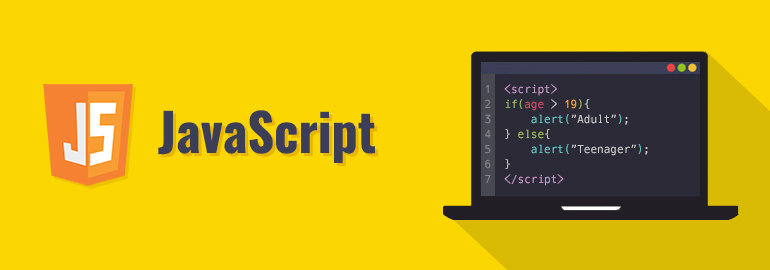

< Cheat Sheet >
Inspired by CodeCademy
Welcome to the <HTML>
The HyperText Markup Language or HTML is the standard markup language for documents designed to be displayed in a web browser. It defines the meaning and structure of web content. It is often assisted by technologies such as Cascading Style Sheets (CSS) and scripting languages such as JavaScript.
Web browsers receive HTML documents from a web server or from local storage and render the documents into multimedia web pages. HTML describes the structure of a web page semantically and originally included cues for its appearance.
HTML elements are the building blocks of HTML pages. With HTML constructs, images and other objects such as interactive forms may be embedded into the rendered page. HTML provides a means to create structured documents by denoting structural semantics for text such as headings, paragraphs, lists, links, quotes, and other items. HTML elements are delineated by tags, written using angle brackets. Tags such as <img> and <input> directly introduce content into the page. Other tags such as <p> and <p> surround and provide information about document text and may include sub-element tags. Browsers do not display the HTML tags but use them to interpret the content of the page.
HTML can embed programs written in a scripting language such as JavaScript, which affects the behavior and content of web pages. The inclusion of CSS defines the look and layout of content. The World Wide Web Consortium (W3C), former maintainer of the HTML and current maintainer of the CSS standards, has encouraged the use of CSS over explicit presentational HTML since 1997. A form of HTML, known as HTML5, is used to display video and audio, primarily using the <canvas> element, together with JavaScript.
19 Commonly Used HTML Tags to Know for Beginners

| Tag | Description |
| <!DOCTYPE> | The DOCTYPE is not technically a tag but a declaration that tells the browser what kind of file will be loaded. This tag tells the browser the type of HTML that will be loaded. |
| <html> </html> | The <html> tag comes after the DOCTYPE tag. This tag defines the document as a web page; every other element will be nested inside. The HTML tag specifies the beginning and end of an HTML document. |
| <head> </head> | The head section of an HTML document is represented by a <head> tag. This tag is enclosed within the <html> tag and gives general information about the webpage.
The <head> tag contains other tags that give specifics of the web page, such as the page’s title and author. The contents of this tag are not displayed on the web page |
| <title> </title> | The <title> tag declares the title of the web page. This tag is enclosed within the <head> tag. The <title> tag will appear on the title bar or the tab in the browser window but not on the actual web page. |
| <body> </body> | The <body> tag displays all the visible content on a web page. Images, links, plain text, videos, and more can be found inside the <body> and </body> tags.
Some of the other tags you will find inside the body include <p> tag for paragraph, <img> tag for images, <strong> tag for bold text, and <ol> tag for an ordered list, to mention a few. |
| <h1> to <h6> tags | There can be up to 6 heading tags in an HTML document. Each of the tags is represented by a number starting from 1 to 6 as <h1>, <h2>, <h3>, <h4>, <h5>, and <h6>.
H1 is the largest heading tag, while H6 is the smallest. |
| <p> </p> | The <p> </p> or simply the paragraph tag is used when you want to structure content into a paragraph. Hitting the ‘enter’ button in an HTML document in your code editor will not create a new paragraph.
If you want more than one paragraph, you have to use several <p> </p> tags on your document. The paragraph tags should be enclosed within the tag. |
| <b> </b> | The <b> </b> or simply bold tag will format any content between the opening <b> and the closing </b> as bold.
The bold tag can be between a heading such as H1 or even within a paragraph tag. |
| <i> </i> | The italic tag, denoted by <i>, italicizes the text inside the tags. |
| <u> </u> | The underline tag, or <u>, is used when you want to underline a certain piece of text in an HTML document. |
| <center> </center> | The Center tag, <center>, is used to center content on an HTML document. |
| <span> </span> | Span tag, <span>, is a generic inline container that does not come with a default style. You can use the span tag to group texts that you want to style. |
| <div> </div> | A division tag, abbreviated as div, is a tag that allows you to group different tags in an HTML document.
A div tag can be given a ‘class’ to add external styling using CSS. |
| <em> </em> | The emphasis, or <em> tag, is used to emphasize certain words in an HTML document.
Content in between <em> tags will appear slanted or italicized. |
| <sup> </sup> | The <sup> or the superscript tag allows the enclosed text to be above the rest. A perfect example is when you want to square a number X and represent it mathematically to give you X2 |
| <sub> </sub> | The subscript or <sub> tag is the opposite of the superscript tag. The content enclosed in the <sub> tag will appear below the normal line of text. A perfect example is when writing the chemical formula of water as H20. |
| <br> | <br> is a self-closing tag that stands for a break. All the content after <br> will start on a new line. |
| <ol> </ol> and <li> </li> | The ordered list tag or the <ol> must be used with another tag such as the <li>. |
| <img src=" "/> | You may want to add an image for visual appeal or even a logo. The self-closing image tag, <img src=””/>, comes in handy in such a case. |
| There exist over 100 HTML tags, but the above are the ones you should know as a beginner. HTML is supported in most code editors, and you are thus assured that you will never go wrong when you start learning. | |
Welcome to the { CSS }

9 Important CSS Properties You Must Know
1: Display
Display takes on many different values, but only 4 are most commonly used. block: Many HTML elements are set to this mode of display by browsers’ stylesheets. They include <div>, <ul> and text blocks like <p>. Block level elements by default take up as much space as they can, and they cannot be placed on the same horizontal line with any other display modes, include other block elements. (Exception: unless they are floated)
inline: The inline mode wraps many HTML elements tighty around them and is the defaults for all elements that are not specified with any other display values. Elements can be placed side by side on the same line as inline elements. Think about the <strong> tag that bolds elements, the <em> tag that creates italics and <a> tags that allow you to link to other web pages. These are all examples of inline elements. You will not be able to change an inline element’s width and height.
inline-block: This is one display value that combines the properties of both block elements and inline elements. You get the ability to set a height and width, and the element can appear on the same horizontal line as other elements.
none: Display none hides the element from the website and it will not be shown visually. This is very useful for CSS Dropdown menus where additional options appear when you hover on navigation menus. The rationale is that elements are set to a display value of none initially, and the display value is changed to block on hover.

2: Width and Height
Width and height properties are used closely with display:block and display:inline to set the width and height of HTML elements while creating a website. Common units units for Width and Height are:
- px - Pixels.
- em - A unit of measurement, where 1 em = current font size.
- rem - Root em. Same measurement as em, but makes life much easier without the inheritance problem
- % - Percentages.
- auto - highly useful unit, will explain below.
3: Margin and Padding
Margins are paddings are things that will definitely appear. Knowing how these things work will be extremely beneficial when writing CSS.
Margins and Paddings dictate the spaces between elements on your website. They are very similar and have the same units as Width and Height mentioned above.
The only difference between margins and paddings is the area the exert control over. Margins affect the area outside of borders whereas paddings affect areas inside the border. It is useful to refer to the box model below:

4: Border
Borders are… borders. I’m pretty sure you don’t need an explanation of what borders are.
Borders have 3 different properties that you have take care of:
- border-width – width of the border. Same units as width and height
- border-style – style of the border. Usual values are solid and dashed. For a complete list, take a look at W3 Schools Website
- border-color – color of the border. Hex, and rgb values can be used.
5: Floats
Floats are one of the core elements in today’s website. If you see two columns of text side by side, a sidebar / content configuration like what you see on my blog if your browser window is above 800px, you have noticed floats in action. Another commonly used area for floats are navigation items.
In the nutshell, what float simply does it to position the edge of the targeted HTML content at the edge of one side of the parent container. Subsequent floats will then be placed at the edge of your first floated content. (depending on whether you float it left or right)
Floats have 3 basic properties that you might use often:
- left
- right
- none - removes the float
6: Clearing Floats
Even though floats are immensely useful, they are sometimes a headache if they are not cleared properly. In general, 2 kinds of problems may occur:

The are 3 main methods for clearing floats:
- clear: The Clear property takes in 3 values. left, right or both. As you might have suspected, clear:left; simply clears any floats on the left side, clear:right; clears floats on the right side while clear:both; ensures that all floats elements are cleared
- overflow:hidden: This method is great for ensuring the parent element does not collapse like in problem 2. overflow:hidden; is set to the parent element to combat the problem.
- clearfix: No doubt you will have heard of or seen clearfix in tutorials. It is also set to the parent element to ensure float issues do not arise. The rationale behind the clearfix hack is to insert some content (a period) after the parent element to force the parent element to self clear since there is content after the floats.
7: Color
Color here refers to text color. It takes on a #hex value or a rgb value as with border colors.
8: Background
Here are the explanations for the background properties in order from left to right:
- background-color: color of the background. Takes #hex value or an rgb value
- background-image: url(URI). Takes on the path to your image. Use the example above if the image is in the same folder. To go down one folder, simple type the file name before the image.png. Example: css/image.png. To go up one folder, type the file name with ”../“. Example: ../css/image.png
- background-repeat: whether you would like the background to repeat if the width exceeds the background size. Other values are repeat, repeat-x and repeat-y.
- background-position: position of the background relative to the HTML element. Two values are needed here, X and Y, where X is the amount of offset from the left and Y is the amount of offset from the top. Takes on either unit values (as with width and height) or left,center,right and top,center,bottom for left and right respectively.
9: Font
Fonts in general refer to the appearance of text in your website. There are a few things to look out for. Like other properties, font has a shorthand. Do note that it is common to see the font shorthand declaration only once in the whole CSS file. It is common to use the different properties at other times:
Here are the explanations for the font properties in order from left to right:
- font-style: Style of the font. valid values are either italic or normal. Defaults to normal. Optional property in font shorthand
- font-variant: variant of the font. valid values are normal and small caps. Defaults to normal. Optional property in font shorthand and is not often used
- font-weight: weight of font. determines if text is bold. valid values are normal, bold, bolder, or 100 - 900. Optional property in font shorthand
- font-size: size of font. Takes a value thats the same as width and height
- line-height: determines the amount of space above and below the text. Very important to ensure good readability. Takes on the same values as font, and also a unitless value. If a unitless value is used, it means the line height is a multiple of the value provided.
- font-family: area to declare typefaces and fontstack that you would like to use.
Welcome to JavaScript
10 Must-Know JavaScript Syntax Rules Every Developer Should Follow
As a developer, it’s crucial to understand the syntax rules of a programming language like JavaScript. Syntax refers to the set of rules that dictate the structure and organization of code, making it easier to understand and follow. By following these rules, developers can write clean, efficient, and maintainable code that is easy to read and understand by other developers. In this article, we’ll discuss the 10 must-know JavaScript syntax rules every developer should follow to write high-quality code.
1. Always Use Semicolons:
In JavaScript, semicolons are used to terminate a statement. While JavaScript allows you to omit semicolons in some cases, it’s always best practice to include them. This helps to avoid any issues that may arise due to the automatic semicolon insertion feature of JavaScript.
2. Use Comments to Explain Code
Comments are an excellent way to document your code, making it easier for other developers to understand. By adding comments, you can provide context for your code, explain the logic behind it, and make it more maintainable.
3. Follow Proper Indentation:
Proper indentation helps to improve the readability of your code. It makes it easier to understand the structure and organization of the code, especially when working with large codebases. Use two or four spaces to indent your code, and be consistent throughout your project.
4. Declare Variables Properly:
JavaScript offers three ways to declare variables: var, let, and const. It’s crucial to use the appropriate declaration type for your variable based on your use case. Variables declared with const are immutable, while those declared with let can be reassigned. Avoid using var as it can lead to hoisting-related issues.
5. Use Single or Double Quotes:
Consistently In JavaScript, you can use both single and double quotes to define strings. However, it’s essential to be consistent in your usage throughout your project to maintain readability and consistency.
6. Be Mindful of Case Sensitivity:
JavaScript is a case-sensitive language, so be mindful of the casing of your code. A variable declared as “myVariable” is different from one declared as “myvariable”. This can lead to bugs and issues if not appropriately addressed.
7. Follow DRY Principles:
DRY stands for “Don’t Repeat Yourself.” It’s essential to follow this principle to reduce redundancy in your code. If you find yourself repeating a particular piece of code, it’s best to extract it into a function or a reusable module.
8. Use Descriptive Naming Conventions:
Using descriptive and meaningful names for your variables, functions, and classes makes your code more understandable and maintainable. Avoid using generic names like “a” or “b” and opt for more descriptive names that convey their purpose.
9. Avoid Global Variables:
Global variables can lead to unexpected issues and bugs, making them hard to debug. Instead, declare your variables within the appropriate scope, such as a function, class, or module.
10. Use Strict Mode:
Strict mode is a feature introduced in ECMAScript 5 that helps to catch common errors and enforce better coding practices. It can be enabled by adding the “use strict” directive at the beginning of your code.
Welcome to GIT

Top 10 Git Commands Every Developer Should Know
Git is open-source software and distributed version control system. It helps developers easily handle different versions of a source code. With it, you can know who did what, when, and why. Nowadays, Git has become a must-have tool for any developer, and knowing Git commands is essential for developers to use Git to its full potential. There are hundreds of Git commands, but only a few significant commands are used regularly.
| Number | Command | Description |
| 1 | git init | The git init command lets us create a new Git repository. This is the first command to start a new project in a GitHub repository. Go to the directory that contains your project files and run the git init command. A hidden .git subdirectory will be added to it.

|
| 2 | git clone | git clone creates a local working copy of the source code from a remote repository. When you clone a repository, the code will be automatically downloaded to your machine. This command will add the original location as a remote location so you can pull changes from it and push changes to it if you have permission.

|
| 3 | git branch | Create a new branch locally |
| 4 | git checkout | The git checkout command allows us to switch to an existing branch or create and switch to a new branch. To achieve this, the branch you want to switch to should be present in your local system and the changes in your current branch should be committed or stashed before you make the switch. You can also use this command for checking out the files.

|
| 5 | git add | The git adds command adds your changes in a file to the staging area where you can compare your local version and the version on the remote repository. Before you commit your new or modified file, it should be added to the staging area by using the git add command.

|
| 6 | git commit | git commit saves the changes in your local repository. Every time you commit your code changes, you have to include a brief description of the changes made. This commit message helps others understand the changes that have been done.

|
| 7 | git push | The git push command pushes the committed file changes from the local repository to the remote repository so others can use them. It will also create a named branch in the remote repository if it does not exist.

|
| 8 | git pull | git pull fetches the last uploaded changes from the remote server into the local repository so that you can have the latest updates from your teammates.

|
| 9 | git merge | The git merge command merges your branch with the parent branch. The parent branch can either be a development or master branch depending on your workflow. It will automatically create a new commit if there are no conflicts. Before running the git merge command, you should be on the specific branch you want to merge with your parent branch. |
| 10 | git status | git status provides an overview of the current status of your repository.

|
| Thanks for reading! In this blog, we have learned some of the most important Git commands to enhance your productivity. Try these Git commands in your day-to-day coding life and let us know if you have any concerns in the comments section below! | ||